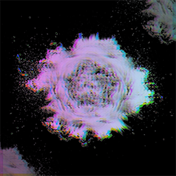

Frawea
Frawea
repo for testing thwlfu's stuff
Add to Cydia
Add to Sileo
Add to Zebra
Packages
Blasis beta
Blasis beta theme with custom ui,respring animation,dock,badges and other stuff you like see on your jailbroken device!
More info
SuperGrade beta
SuperGrade theme
View SuperGrade Beta 1.0